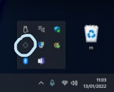

requisiti: pc windows o mac
1. andare su altstore.io e selezionare l'edizione per il vostro pc (windows/macOS)
2. aprire il file zip e avviare il programma di installazzione (per windows setup.exe, per mac semplicemente estrarre il contenuto dello zip)
3. successivamente aprire il programma installato "altserver"
4. vi chiedera' di installare itunes e icloud (necessari per il funzionamento del programma) voi premete "Download"
5. collegate il vostro iphone/ipad al pc
6. avviate il programma dalla barrra degli strumenti
7. cliccate su "install altstore" e selezionate il vostro dispositivo
8. accedete con il vostro icloud
Verra' installata l'applicazione "altstore" sul vostro dispositivo
9. cliccate su "Apri su altstore" qua' sopra
Si aprira' altstore e l'app verra' installata sul tuo dispositivo